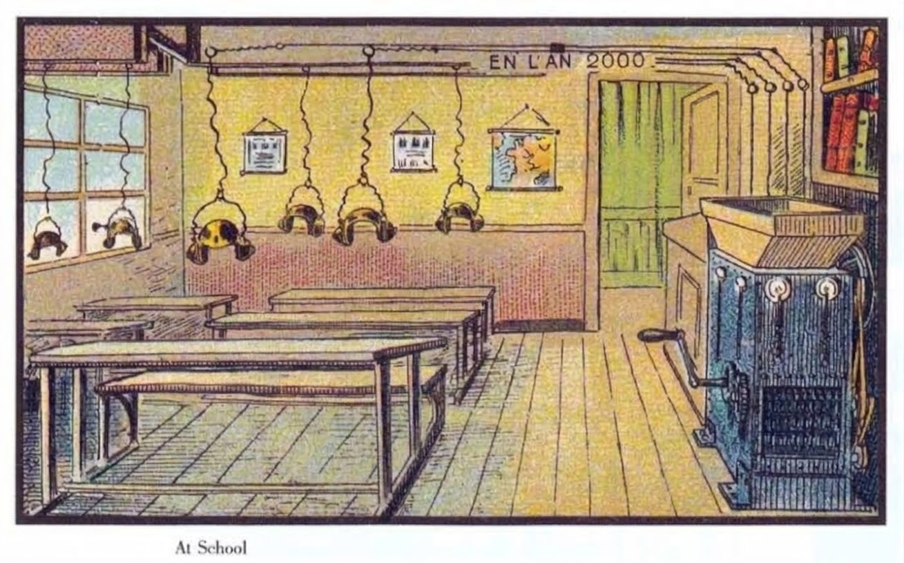
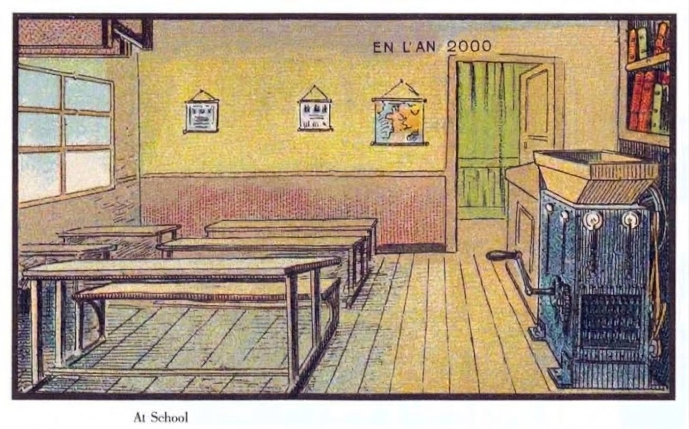
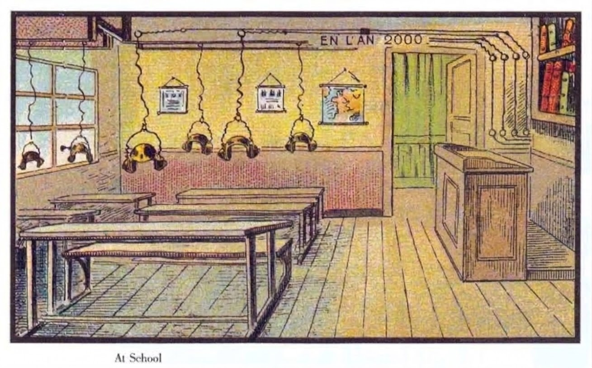
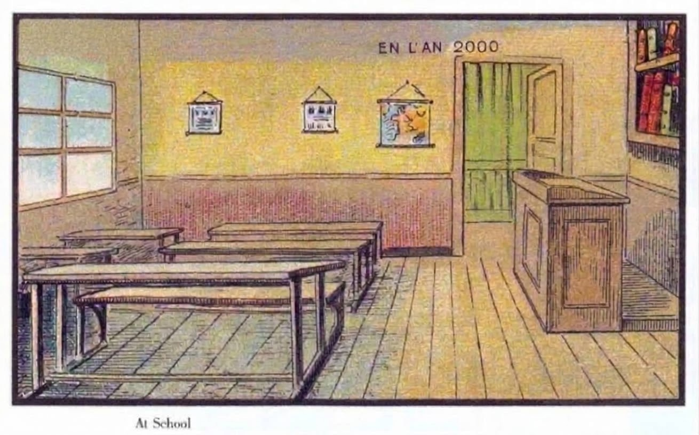

Version 9 is Lesson One again, but the whole class is a cast of layers on clean plates of the card. Version 1 drew the room in code, and the shorts cut the card's own pixels and filled the holes from their surroundings. This version starts from five plates of the same room that Watson made with an image model, each with less in it. They line up with each other and with the card to the pixel.




Two of the five plates were identical, so four are kept. Because the plates line up, subtracting one from another gives a layer that is already in place (assets/v9/build_layers.py):
Six pupils, the teacher reading, the teacher pointing and the crank boy, from Watson's motion proof (an earlier pass that extracted them from generated sprite sheets by connected alpha components). Each pupil comes with a rough head layer and body layer. The neck is found as the lowest row of the head layer, and the head turns about it: bowed while the crank turns, lifted and turned toward the window or the teacher when it stops. The wires are drawn from the ceiling rail to each helmet and carry a red pulse while the machine runs.
The theory of play is version 1's: the machine runs only while the boy turns, and the play is in what happens when he stops. Version 1 used the silence to read the page in the hopper. Version 9 uses the plates. Stop for six seconds and, in one stop-substitution with two white frames, the machine is gone: there was a lectern under it all along, and the teacher comes to it and teaches. Turn the handle for three seconds and the machine is back. Nothing tells the player this can happen. At the bell after ninety seconds the game reports how long each lesson ran and how often the heads came up, and makes no judgement.
The lectern is the image model's invention: the card never shows what is under the machine. That is why the game is built on it. A clean plate has to put something where the machine was, and what it chose is the older future, a man at a desk talking.